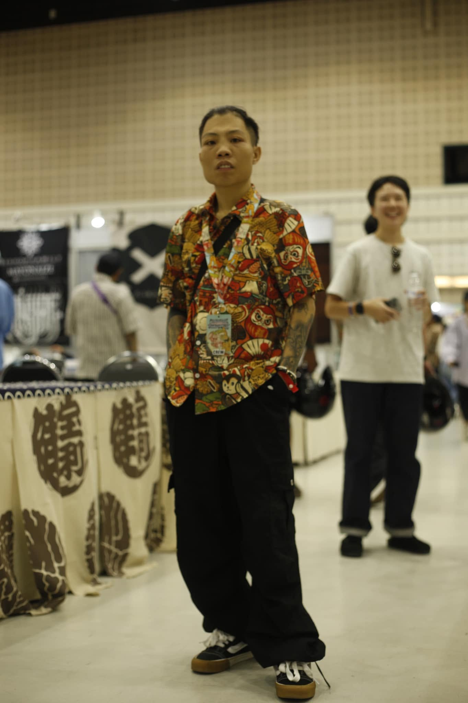
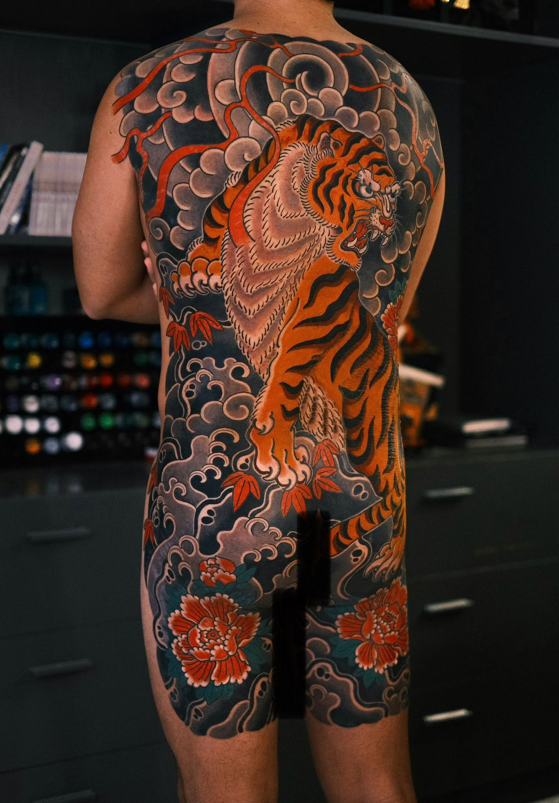
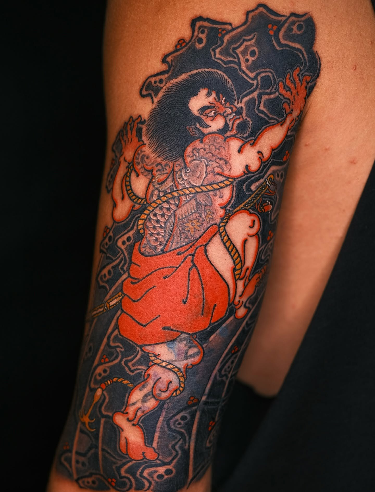
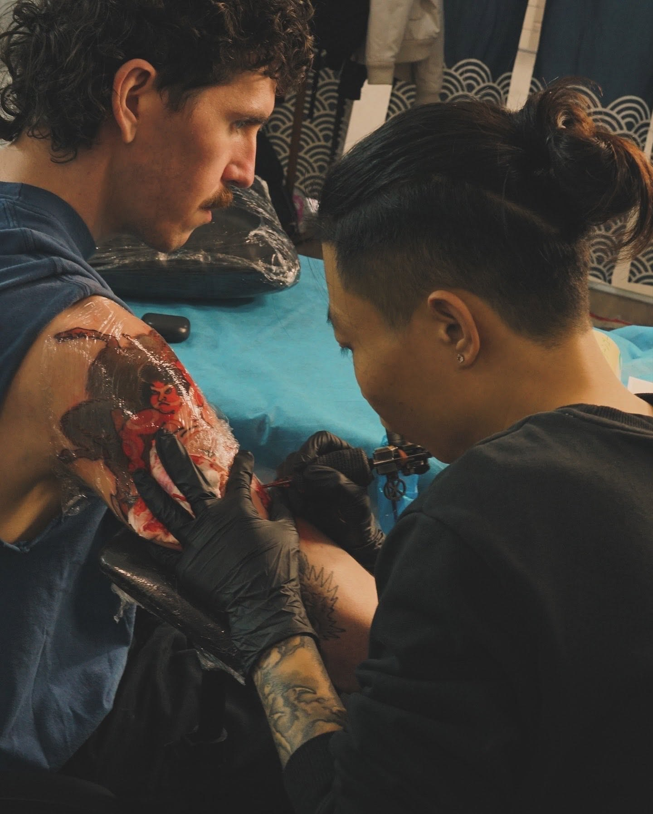
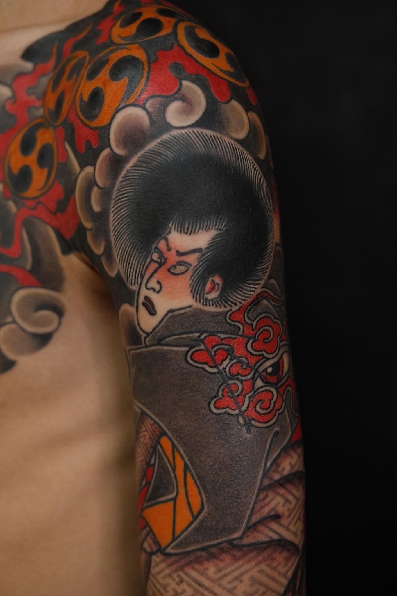
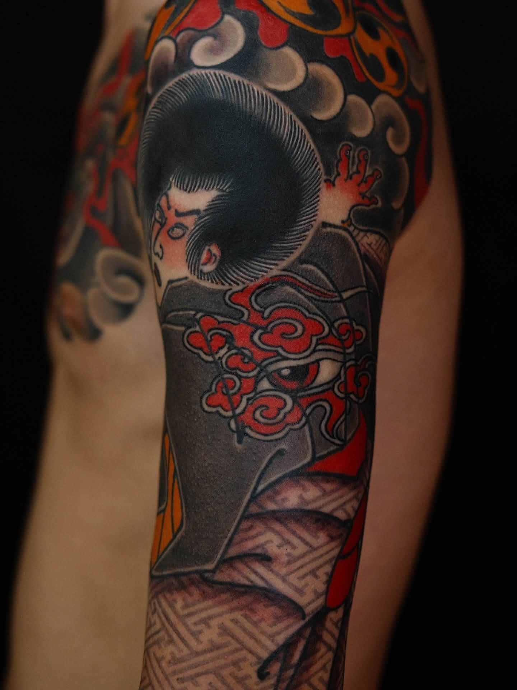

Resident artist
ORIENTAL.ZYN
01
Resident artist
Ten years devoted to traditional Japanese composition.
Oriental.Zyn focuses on large-scale work designed around the movement of the body. Backpieces, sleeves and continuous compositions are built through background, rhythm and balance between the main subject and negative space.
Experience10 years
StyleTraditional Japanese Tattoo
LocationSaigon, Vietnam
Selected works
Large compositions built for the body.





Sleeve collection
One continuous composition from shoulder to wrist.





SAIGON NEEDLE
Book with Oriental.Zyn
All booking requests are handled directly through SAIGON NEEDLE.
Book appointment ↗